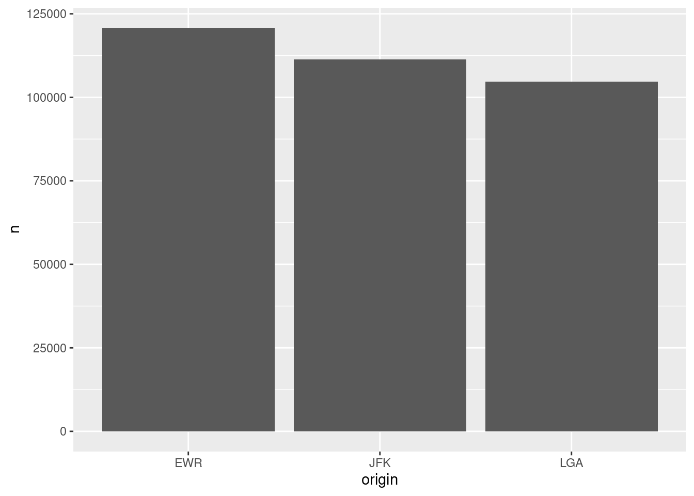

9 Big data
9.1 The Big Picture
- Big data problem: data is too big to fit into memory (=local environment).
- R reads data into random-access memory (RAM) at once, and this object lives in memory entirely. So, if object.size > memory.size, the process will crash R.
- Therefore, the key to dealing with big data in R is reducing the size of data you want to bring into it.
Techniques to deal with big data
- Medium-sized file (1-2 GB)
- Try to reduce the size of the file using slicing and dicing
- Tools:
- R:
data.table::fread(file path, select = c("column 1", "column 2")). This command imports data faster thanread.csv()does. - Command-line:
csvkit- a suite of command-line tools to and working with CSV
- R:
- Large file (> 2-10 GB)
- Put the data into a database and ACCESS it
- Explore the data and pull the objects of interest
Databases
- Types of databases
- Relational database = a collection of tables (fixed columns and rows): SQL is a staple tool to define, query (the focus of the workshop today), control, and manipulate this type of database
- Non-relational database = a collection of documents (MongoDB), key-values (Redis and DyanoDB), wide-column stores (Cassandra and HBase), or graph (Neo4j and JanusGraph). Note that this type of database does not preclude SQL. NoSQL stands for “not only SQL.”
Relational database example

9.2 SQL
Structured Query Language. Called SEQUEL and was developed by IBM Corporation in the 1970s.
Remains the standard language for a relational database management system.
-
It’s a DECLARATIVE language (what to do > how to do)
- Database management systems figure an optimal way to execute a query (query optimization)
9.2.1 Learning objectives
Embracing a new mindset: shifting from ownership (opening CSVs stored in your laptop) to access (accessing data stored in a database)
Learning how to use R and SQL to access and query a database
9.2.2 SQL and R
- SQL and R
| SQL | R |
|---|---|
| SELECT | select() for columns, mutate() for expressions, summarise() for aggregates |
| FROM | which data frame |
| WHERE | filter() |
| GROUP BY | group_by() |
| HAVING | filter() after group_by() |
| ORDER BY | arrange() |
| LIMIT | head() |
Challenge 1
- Can you tell me the difference in the order in which the following
RandSQLcodes were written to manipulate data? For instance, in R, what command comes first? In contrast, in SQL, what command comes first?
- R example
data %>% # Data
select() %>% # Column
filter() %>% # Row
group_by() %>% # Group by
summarise(n = n()) %>% # n() is one of the aggregate functions in r; it's count() used inside summarise() function
filter() %>% # Row
order_by() # Arrange - SQL example (in a SQL chunk, use
--instead of#to comment)
SELECT column, aggregation (count())` -- Column
FROM data # Data
WHERE condition -- Filter rows
GROUP BY column -- Group by
HAVING condition -- Filter rows after group by
ORDER BY column -- Arrange 
9.2.4 Packages
-
pacman::p_load()reduces steps for installing and loading several packages simultaneously.
# Install pacman if it’s not already installed, then load packages
if (!requireNamespace("pacman", quietly = TRUE)) {
install.packages("pacman")
}
pacman::p_load(
tidyverse, # Data manipulation & visualization (ggplot2, dplyr, etc.)
DBI, # Database interface (DBI spec)
RSQLite, # SQLite backend for DBI
dbplyr, # dplyr interface for databases
glue, # String interpolation
nycflights13 # Example flight data for demos
)##
## The downloaded binary packages are in
## /var/folders/wt/b5zf6_0910b4_lsl7k4_jcnm0000gn/T//RtmpmPBYNo/downloaded_packages9.2.5 NYC flights data
- The flight on-time performance data from the Bureau of Transportation Statistics of the U.S. government. The data goes back to 1987, and its size is more than 20 gigabytes. For practice, we only use a small subset of the original data (flight data departing NYC in 2013) provided by RStudio.

9.2.6 Workflow
- Create/connect to a database
Note that the server also can be your laptop (called localhost).
Short answer: To do so, you need interfaces between R and a database. We use
RSQLitein this tutorial because it’s easy to set up.Long answer: The
DBIpackage in R provides a client-side interface that allowsdplyrto work with databases. DBI is automatically installed when you installdbplyr. However, you need to install a specific backend engine (a tool for communication between R and a database management system) for the database (e.g.,RMariaDB,RPostgres,RSQLite). In this workshop, we use SQLite because it is the easiest to get started with. I love PostgreSQL because it’s open-source and also powerful to do many amazing things (e.g., text mining, geospatial analysis). If you want to build a data warehouse, an analytical platform, consider using Spark (Hadoop).
- Copy a table to the database
Option 1: You can create a table and insert rows manually. You also need to define the data schema (the database structure) to do that.
-
Table
- Collection of rows
- Collection of columns (fields or attributes)
- Each col has a type:
- String:
VARCHAR(20) - Integer:
INTEGER - Floating-point:
FLOAT,DOUBLE - Date/time:
DATE,TIME,DATETIME
- String:
-
Schema: the structure of the database
- The table name
- The names and types of its columns
- Various optional additional information
-
Constraints
- Syntax:
column datatype constraint - Examples:
NOT NULL,UNIQUE,INDEX
- Syntax:
-
Constraints
-- Create table
CREATE TABLE students (
id INT AUTO_INCREMENT,
name VARCHAR(30),
birth DATE,
gpa FLOAT,
grad INT,
PRIMARY KEY(id));
-- Insert one additional row
INSERT INTO students(name, birth, gpa, grad)
VALUES ('Adam', '2000-08-04', 4.0, 2020);- Option 2: Copy a file (object) to a table in a database using
copy_to). We take this option as it’s fast, and we would like to focus on querying in this workshop.
- Query the table
- Main focus
Pull the results of interests (data) using
collect()Disconnect the database
9.2.6.1 Create a database
# Define a backend engine
drv <- RSQLite::SQLite()
# Create an empty in-memory database
con <- DBI::dbConnect(drv,
dbname = ":memory:")
# Connect to an existing database
#con <- DBI::dbConnect(RMariaDB::MariaDB(),
# host = "database.rstudio.com",
# user = "hadley",
# password = rstudioapi::askForPassword("Database password")
#)
dbListTables(con)## character(0)
# character(0) = NULL- Note that
conis empty at this stage.
9.2.6.2 Copy an object as a table to the database (push)
# Copy objects to the data
# copy_to() comes from dplyr
copy_to(dest = con,
df = flights)
copy_to(dest = con,
df = airports)
copy_to(dest = con,
df = planes)
copy_to(dest = con,
df = weather)
# If you need, you can also select which columns you would like to copy:
# copy_to(dest = con,
# df = flights,
# name = "flights",
# indexes = list(c("year", "tailnum", "dest")))
# Show two tables in the database
dbListTables(con)## [1] "airports" "flights" "planes" "sqlite_stat1" "sqlite_stat4"
## [6] "weather"
# Show the columns/attributes/fields of a table
dbListFields(con, "flights")## [1] "year" "month" "day" "dep_time"
## [5] "sched_dep_time" "dep_delay" "arr_time" "sched_arr_time"
## [9] "arr_delay" "carrier" "flight" "tailnum"
## [13] "origin" "dest" "air_time" "distance"
## [17] "hour" "minute" "time_hour"
dbListFields(con, "weather")## [1] "origin" "year" "month" "day" "hour"
## [6] "temp" "dewp" "humid" "wind_dir" "wind_speed"
## [11] "wind_gust" "precip" "pressure" "visib" "time_hour"9.2.6.3 Quick demonstrations:
SELECT desired columns
FROM tables
Select all columns (*) from
flightstable and show thefirst ten rowsNote that you can combine SQL and R commands thanks to
dbplyr.Option 1
DBI::dbGetQuery(con,
"SELECT * FROM flights;") %>% # SQL
head(10) # dplyr ## year month day dep_time sched_dep_time dep_delay arr_time sched_arr_time
## 1 2013 1 1 517 515 2 830 819
## 2 2013 1 1 533 529 4 850 830
## 3 2013 1 1 542 540 2 923 850
## 4 2013 1 1 544 545 -1 1004 1022
## 5 2013 1 1 554 600 -6 812 837
## 6 2013 1 1 554 558 -4 740 728
## 7 2013 1 1 555 600 -5 913 854
## 8 2013 1 1 557 600 -3 709 723
## 9 2013 1 1 557 600 -3 838 846
## 10 2013 1 1 558 600 -2 753 745
## arr_delay carrier flight tailnum origin dest air_time distance hour minute
## 1 11 UA 1545 N14228 EWR IAH 227 1400 5 15
## 2 20 UA 1714 N24211 LGA IAH 227 1416 5 29
## 3 33 AA 1141 N619AA JFK MIA 160 1089 5 40
## 4 -18 B6 725 N804JB JFK BQN 183 1576 5 45
## 5 -25 DL 461 N668DN LGA ATL 116 762 6 0
## 6 12 UA 1696 N39463 EWR ORD 150 719 5 58
## 7 19 B6 507 N516JB EWR FLL 158 1065 6 0
## 8 -14 EV 5708 N829AS LGA IAD 53 229 6 0
## 9 -8 B6 79 N593JB JFK MCO 140 944 6 0
## 10 8 AA 301 N3ALAA LGA ORD 138 733 6 0
## time_hour
## 1 1357034400
## 2 1357034400
## 3 1357034400
## 4 1357034400
## 5 1357038000
## 6 1357034400
## 7 1357038000
## 8 1357038000
## 9 1357038000
## 10 1357038000- Option 2 (works faster)
-
Option 3 (automating workflow)
- When local variables are updated, the SQL query is also automatically updated. This approach is called parameterized query (or prepared statement).
######################## PREPARATION ########################
# Local variables
tbl <- "flights"
var <- "dep_delay"
num <- 10
# Glue SQL query string
# Note that to indicate a numeric value, you don't need.
sql_query <- glue_sql("
SELECT {`var`}
FROM {`tbl`}
LIMIT {num}
", .con = con)
######################## EXECUTION ########################
# Run the query
dbGetQuery(con, sql_query)## dep_delay
## 1 2
## 2 4
## 3 2
## 4 -1
## 5 -6
## 6 -4
## 7 -5
## 8 -3
## 9 -3
## 10 -2Challenge 2
Can you rewrite the above code using LIMIT instead of head(10)?
You may notice that using only SQL code makes querying faster.
Select
dep_delayandarr_delayfrom flights table, show the first ten rows, then turn the result into a tibble.
Challenge 3
Could you remind me how to see the list of attributes of a table? Let’s say you want to see the flights table attributes. How can you do it?
- Collect the selected columns and filtered rows
-
Counting rows
- Count all (*)
dbGetQuery(con,
"SELECT COUNT(*)
FROM flights;") ## COUNT(*)
## 1 336776
dbGetQuery(con,
"SELECT COUNT(dep_delay)
FROM flights;")## COUNT(dep_delay)
## 1 328521- Count distinct values
dbGetQuery(con,
"SELECT COUNT(DISTINCT dep_delay)
FROM flights;")## COUNT(DISTINCT dep_delay)
## 1 5279.2.6.4 Tidy-way: dplyr -> SQL
Thanks to the dbplyr package, you can use the dplyr syntax to query SQL.
- Note that pipe (%) works.
# tbl select tables
flights <- con %>% tbl("flights")
airports <- con %>% tbl("airports")
planes <- con %>% tbl("planes")
weather <- con %>% tbl("weather")-
select=SELECT
## # Source: SQL [?? x 2]
## # Database: sqlite 3.51.1 [:memory:]
## dep_delay arr_delay
## <dbl> <dbl>
## 1 2 11
## 2 4 20
## 3 2 33
## 4 -1 -18
## 5 -6 -25
## 6 -4 12
## 7 -5 19
## 8 -3 -14
## 9 -3 -8
## 10 -2 8
## # ℹ more rowsChallenge 4
Your turn: write the same code in SQL. Don’t forget to add the connection argument to your SQL code chunk.
-
mutate=SELECTAS
## # Source: SQL [?? x 3]
## # Database: sqlite 3.51.1 [:memory:]
## distance air_time speed
## <dbl> <dbl> <dbl>
## 1 1400 227 370.
## 2 1416 227 374.
## 3 1089 160 408.
## 4 1576 183 517.
## 5 762 116 394.
## 6 719 150 288.
## 7 1065 158 404.
## 8 229 53 259.
## 9 944 140 405.
## 10 733 138 319.
## # ℹ more rowsChallenge 5
Your turn: write the same code in SQL. (
Hint: mutate(new_var = var 1 * var2 (R) = SELECT var1 * var2 AS near_var (SQL)
-
filter=WHERE
# Tell conflicted to prefer dplyr’s filter() over any other
conflict_prefer("filter", "dplyr")
flights %>%
filter(month == 1, day == 1) # filter(month ==1 & day == 1) Both work in the same way.## # Source: SQL [?? x 19]
## # Database: sqlite 3.51.1 [:memory:]
## year month day dep_time sched_dep_time dep_delay arr_time sched_arr_time
## <int> <int> <int> <int> <int> <dbl> <int> <int>
## 1 2013 1 1 517 515 2 830 819
## 2 2013 1 1 533 529 4 850 830
## 3 2013 1 1 542 540 2 923 850
## 4 2013 1 1 544 545 -1 1004 1022
## 5 2013 1 1 554 600 -6 812 837
## 6 2013 1 1 554 558 -4 740 728
## 7 2013 1 1 555 600 -5 913 854
## 8 2013 1 1 557 600 -3 709 723
## 9 2013 1 1 557 600 -3 838 846
## 10 2013 1 1 558 600 -2 753 745
## # ℹ more rows
## # ℹ 11 more variables: arr_delay <dbl>, carrier <chr>, flight <int>,
## # tailnum <chr>, origin <chr>, dest <chr>, air_time <dbl>, distance <dbl>,
## # hour <dbl>, minute <dbl>, time_hour <dbl>Challenge 6
Your turn: write the same code in SQL (hint: filter(condition1, condition2) = WHERE condition1 and condition2)
Additional tips
Note that R and SQL operators are not exactly alike. R uses != for Not equal to. SQL uses <> or !=. Furthermore, there are some cautions about using NULL (NA; unknown or missing): it should be IS NULL or IS NOT NULL not =NULL or !=NULL (this makes sense because NULL represents an absence of a value).
Another pro-tip is LIKE operator, used in a WHERE statement to find values based on string patterns.
SELECT DISTINCT(origin) -- Distinct values from origin column
FROM flights
WHERE origin LIKE 'J%'; -- Find any origin values that start with "J"| origin |
|---|
| JFK |
% is one of the wildcards you can use for string matching. % matches any number of characters. So, J% matches Jae, JFK, Joseph, etc. _ is another useful wildcard that matches exactly one character. So J_ matches only JA, JE, etc. If wildcards are not enough, then you should consider using regular expressions.
-
arrange=ORDER BY
flights %>%
arrange(carrier, desc(arr_delay)) %>%
show_query()## <SQL>
## SELECT `flights`.*
## FROM `flights`
## ORDER BY `carrier`, `arr_delay` DESCChallenge 7
Your turn: write the same code in SQL.
Hint: arrange(var1, desc(var2) (R) = ORDER BY var1, var2 DESC (SQL)
-
summarise=SELECTASandgroup by=GROUP BY
## # Source: SQL [?? x 3]
## # Database: sqlite 3.51.1 [:memory:]
## # Groups: month
## month day delay
## <int> <int> <dbl>
## 1 1 1 11.5
## 2 1 2 13.9
## 3 1 3 11.0
## 4 1 4 8.95
## 5 1 5 5.73
## 6 1 6 7.15
## 7 1 7 5.42
## 8 1 8 2.55
## 9 1 9 2.28
## 10 1 10 2.84
## # ℹ more rowsChallenge 8
Your turn: write the same code in SQL (hint: in SQL the order should be SELECT group_var1, group_var2, AVG(old_var) AS new_var -> FROM -> GROUP BY)
- If you feel too much challenged, here’s a help.
flights %>%
group_by(month, day) %>%
summarise(delay = mean(dep_delay)) %>%
show_query() # Show the SQL equivalent!## <SQL>
## SELECT `month`, `day`, AVG(`dep_delay`) AS `delay`
## FROM `flights`
## GROUP BY `month`, `day`Joins
Using joins is more straightforward in R than it is in SQL.
-
However, more flexible joins exist in SQL, and they are not available in R.
- Joins involving 3+ tables are not supported.
- Some advanced joins available in SQL are not supported.
- For more information, check out
tidyqueryto see the latest developments.
SQL command
FROM one table LEFT JOIN another table ON condition = condition (ON in SQL = BY in R)
| year | month | day | dep_time | sched_dep_time | dep_delay | arr_time | sched_arr_time | arr_delay | carrier | flight | tailnum | origin | dest | air_time | distance | hour | minute | time_hour | origin | year | month | day | hour | temp | dewp | humid | wind_dir | wind_speed | wind_gust | precip | pressure | visib | time_hour |
|---|---|---|---|---|---|---|---|---|---|---|---|---|---|---|---|---|---|---|---|---|---|---|---|---|---|---|---|---|---|---|---|---|---|
| 2013 | 1 | 1 | 517 | 515 | 2 | 830 | 819 | 11 | UA | 1545 | N14228 | EWR | IAH | 227 | 1400 | 5 | 15 | 1357034400 | EWR | 2013 | 1 | 1 | 1 | 39.02 | 26.06 | 59.37 | 270 | 10.35702 | NA | 0 | 1012.0 | 10 | 1357020000 |
| 2013 | 1 | 1 | 517 | 515 | 2 | 830 | 819 | 11 | UA | 1545 | N14228 | EWR | IAH | 227 | 1400 | 5 | 15 | 1357034400 | EWR | 2013 | 1 | 1 | 2 | 39.02 | 26.96 | 61.63 | 250 | 8.05546 | NA | 0 | 1012.3 | 10 | 1357023600 |
| 2013 | 1 | 1 | 517 | 515 | 2 | 830 | 819 | 11 | UA | 1545 | N14228 | EWR | IAH | 227 | 1400 | 5 | 15 | 1357034400 | EWR | 2013 | 1 | 1 | 3 | 39.02 | 28.04 | 64.43 | 240 | 11.50780 | NA | 0 | 1012.5 | 10 | 1357027200 |
| 2013 | 1 | 1 | 517 | 515 | 2 | 830 | 819 | 11 | UA | 1545 | N14228 | EWR | IAH | 227 | 1400 | 5 | 15 | 1357034400 | EWR | 2013 | 1 | 1 | 4 | 39.92 | 28.04 | 62.21 | 250 | 12.65858 | NA | 0 | 1012.2 | 10 | 1357030800 |
| 2013 | 1 | 1 | 517 | 515 | 2 | 830 | 819 | 11 | UA | 1545 | N14228 | EWR | IAH | 227 | 1400 | 5 | 15 | 1357034400 | EWR | 2013 | 1 | 1 | 5 | 39.02 | 28.04 | 64.43 | 260 | 12.65858 | NA | 0 | 1011.9 | 10 | 1357034400 |
| 2013 | 1 | 1 | 517 | 515 | 2 | 830 | 819 | 11 | UA | 1545 | N14228 | EWR | IAH | 227 | 1400 | 5 | 15 | 1357034400 | EWR | 2013 | 1 | 1 | 6 | 37.94 | 28.04 | 67.21 | 240 | 11.50780 | NA | 0 | 1012.4 | 10 | 1357038000 |
| 2013 | 1 | 1 | 517 | 515 | 2 | 830 | 819 | 11 | UA | 1545 | N14228 | EWR | IAH | 227 | 1400 | 5 | 15 | 1357034400 | EWR | 2013 | 1 | 1 | 7 | 39.02 | 28.04 | 64.43 | 240 | 14.96014 | NA | 0 | 1012.2 | 10 | 1357041600 |
| 2013 | 1 | 1 | 517 | 515 | 2 | 830 | 819 | 11 | UA | 1545 | N14228 | EWR | IAH | 227 | 1400 | 5 | 15 | 1357034400 | EWR | 2013 | 1 | 1 | 8 | 39.92 | 28.04 | 62.21 | 250 | 10.35702 | NA | 0 | 1012.2 | 10 | 1357045200 |
| 2013 | 1 | 1 | 517 | 515 | 2 | 830 | 819 | 11 | UA | 1545 | N14228 | EWR | IAH | 227 | 1400 | 5 | 15 | 1357034400 | EWR | 2013 | 1 | 1 | 9 | 39.92 | 28.04 | 62.21 | 260 | 14.96014 | NA | 0 | 1012.7 | 10 | 1357048800 |
| 2013 | 1 | 1 | 517 | 515 | 2 | 830 | 819 | 11 | UA | 1545 | N14228 | EWR | IAH | 227 | 1400 | 5 | 15 | 1357034400 | EWR | 2013 | 1 | 1 | 10 | 41.00 | 28.04 | 59.65 | 260 | 13.80936 | NA | 0 | 1012.4 | 10 | 1357052400 |
Can anyone explain why SQL query using dplyr then translated by show_query() looks more complex than the above? (Hint)
flights %>%
left_join(weather, by = c("year", "month")) %>%
show_query()## <SQL>
## SELECT
## `flights`.`year` AS `year`,
## `flights`.`month` AS `month`,
## `flights`.`day` AS `day.x`,
## `dep_time`,
## `sched_dep_time`,
## `dep_delay`,
## `arr_time`,
## `sched_arr_time`,
## `arr_delay`,
## `carrier`,
## `flight`,
## `tailnum`,
## `flights`.`origin` AS `origin.x`,
## `dest`,
## `air_time`,
## `distance`,
## `flights`.`hour` AS `hour.x`,
## `minute`,
## `flights`.`time_hour` AS `time_hour.x`,
## `weather`.`origin` AS `origin.y`,
## `weather`.`day` AS `day.y`,
## `weather`.`hour` AS `hour.y`,
## `temp`,
## `dewp`,
## `humid`,
## `wind_dir`,
## `wind_speed`,
## `wind_gust`,
## `precip`,
## `pressure`,
## `visib`,
## `weather`.`time_hour` AS `time_hour.y`
## FROM `flights`
## LEFT JOIN `weather`
## ON (
## `flights`.`year` = `weather`.`year` AND
## `flights`.`month` = `weather`.`month`
## )9.2.6.5 Collect (pull)
collect()is used to pull the data. Depending on the data size, it may take a long time to run.The following code won’t work.
Error in UseMethod(“collect”) : no applicable method for ‘collect’ applied to an object of class “c(‘LayerInstance’, ‘Layer’, ‘ggproto’, ‘gg’)”
origin_flights_plot <- flights %>%
group_by(origin) %>%
tally() %>%
ggplot() +
geom_col(aes(x = origin, y = n)) %>%
collect()- This works.
df <- flights %>%
group_by(origin) %>%
tally() %>%
collect()
origin_flights_plot <- ggplot(df) +
geom_col(aes(x = origin, y = n))
origin_flights_plot
9.2.6.6 Disconnect
DBI::dbDisconnect(con)9.2.7 Things we didn’t cover
9.2.7.1 Subquery
Subquery = a query nested inside a query
This hypothetical example is inspired by dofactory blog post.
9.2.7.2 Common table expression (WITH clauses)
This is just a hypothetical example inspired by [James LeDoux’s blog post](https://jamesrledoux.com/code/sql-cte-common-table-expressions.
-- cases about R and SQL from dlab-database
WITH r_sql_consulting_cases AS ( -- The name of the CTE expression
-- The CTE query
SELECT
id
FROM
dlab
WHERE
tags LIKE '%sql%'
AND
tags LIKE '%r%'
),
-- count the number of open cases about this consulting category
-- The outer query
SELECT status, COUNT(status) AS open_status_count
FROM dlab as d
INNER JOIN r_sql_consulting_cases as r
ON d.id = r.id
WHERE status = 'open'; 9.2.8 References
- csv2db - for loading large CSV files in to a database
- R Studio, Database using R
- Ian Cook, “Bridging the Gap between SQL and R” rstudio::conf 2020 slides
- Data Carpentry contributors, SQL database and R, Data Carpentry, September 10, 2019.
- Introduction to dbplyr
- Josh Erickson, SQL in R, STAT 701, University of Michigan
- SQL zine by Julia Evans
- q - a command-line tool that allows direct execution of SQL-like queries on CSVs/TSVs (and any other tabular text files)